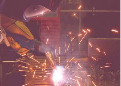
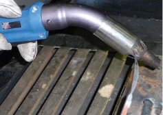
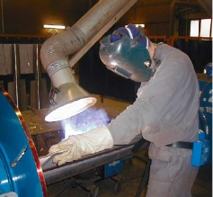
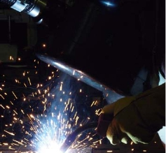
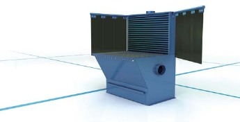
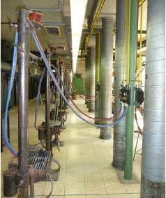
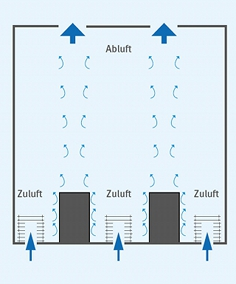
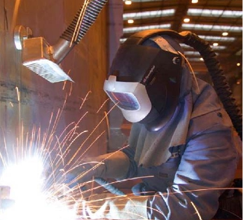

Müssen Schweißrauche durch technische Maßnahmen aus dem Atembereich entfernt werden?
Ja. Dies kann erfolgen durch:
- Absaugung an der Entstehungsstelle (brennerintegrierte Absaugung).


Bilder 2 + 3 Brennerintegrierte Absaugung
- Absaugung in der Nähe der Entstehungsstelle (Absaugarm, mobil oder stationär, Schutzschildabsaugung, Schweißtische mit Unter-/Rückwandabsaugung, ortsfeste Absaughauben).
 |
|
 |
Bild 4 Absaugarm mit
Erfassungselement |
|
Bild 5 Schutzschildabsaugung |

Bild 6 Schweißtisch mit Erfassung in der Rückwand
- Technische Raumlüftung, optimal ist die Luftzuführung im Bodenbereich und Abführung der Schweißrauche im Deckenbereich (Schichtlüftung). Als alleinige Maßnahme ist die natürliche Lüftung durch Türen und Fenster wegen ihrer Witterungsabhängigkeit im Normalfall nicht ausreichend!


Bild 7 Schweißerei mit Schichtlüftung

Bild 8 Schweißrauchabsaugung plus Schweißerschutzhaube mit Frischluftversorgung (persönliche Schutzausrüstung)